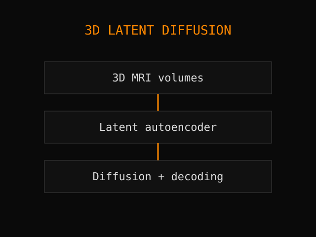

3D Diffusion for Brain MRI
Research · Indiana University
Designed and trained latent generative models for 3D brain MRI synthesis, exploring VQ-VAE/VQ-GAN representations and diffusion with reproducible experiment tracking.
Technical walkthrough ↗